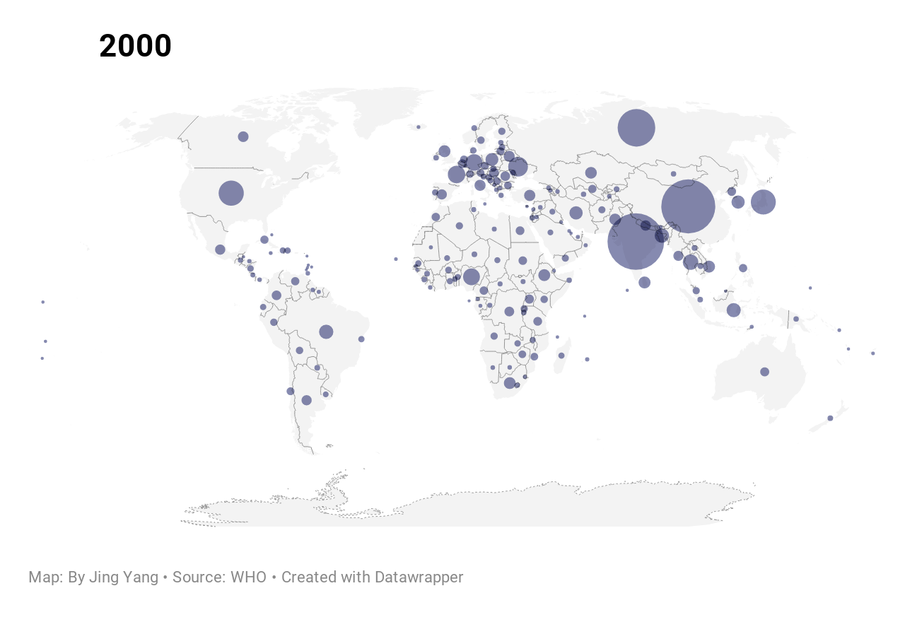
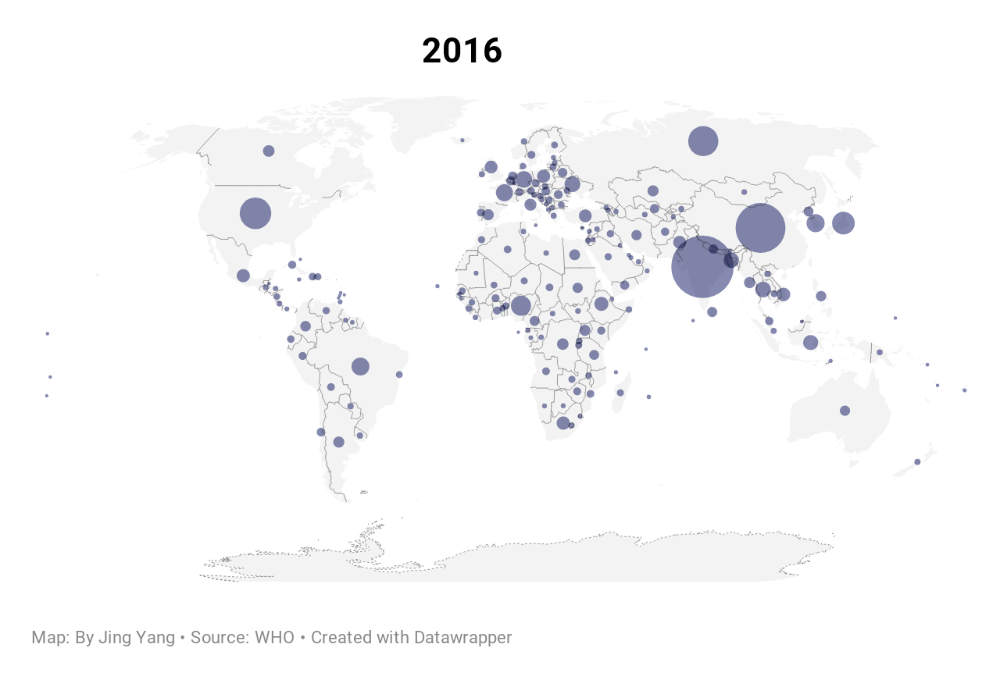
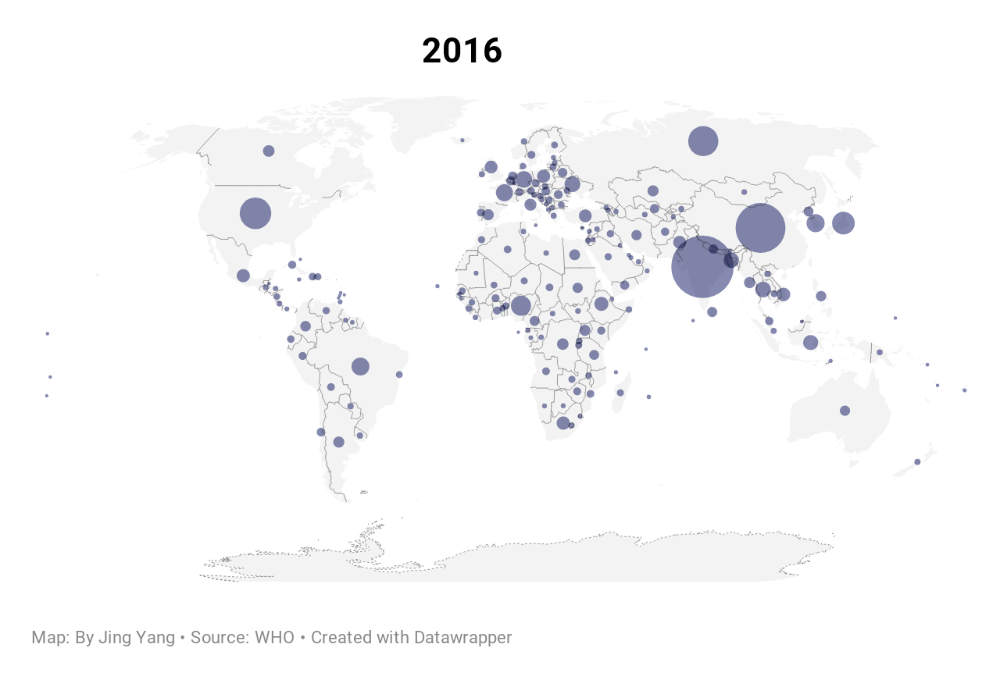
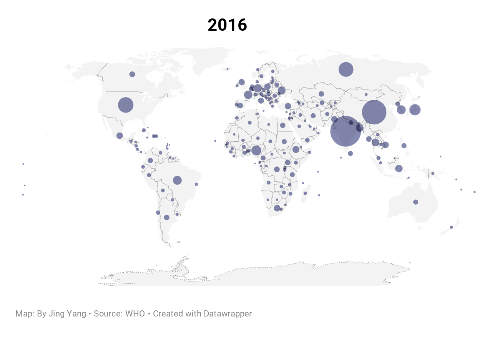
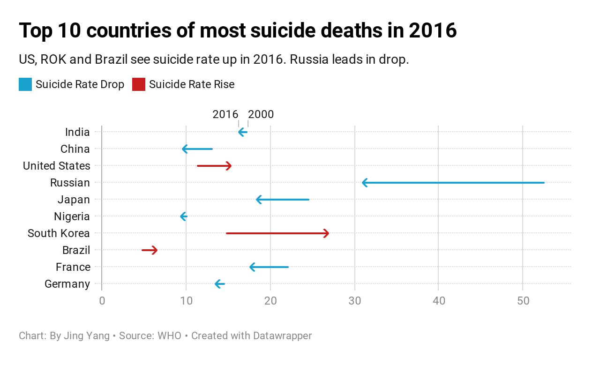
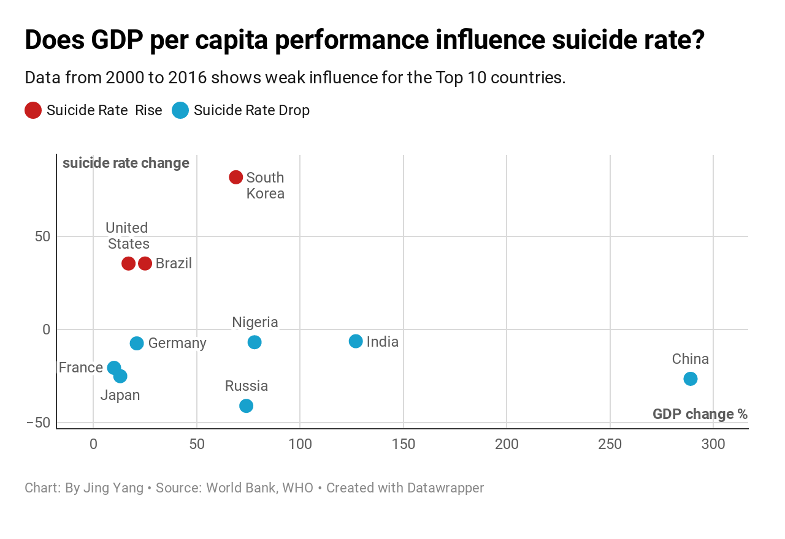
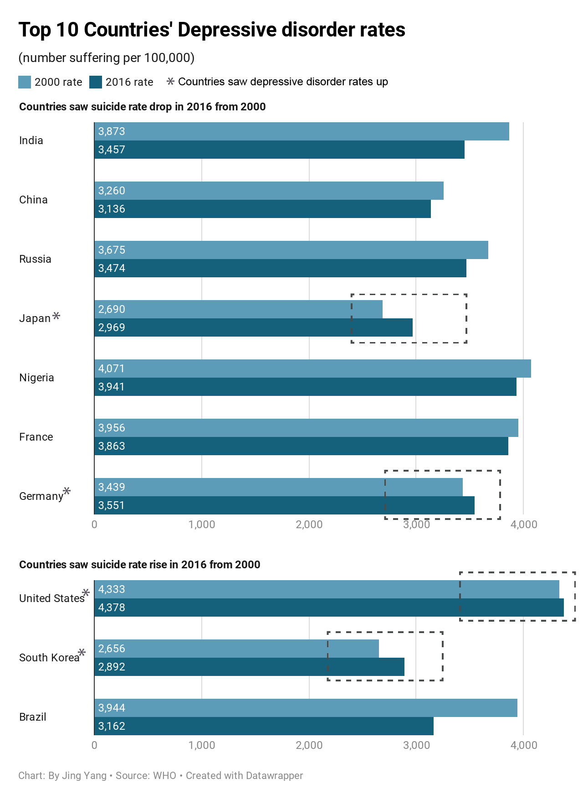

Although the world average suicides have been declining in recent years, the desperate self-destruction remains a dark challenge.
  

 For each suicide, there are more than 20 suicide attempts. - WHO
Despite progress, one person still dies every 40 seconds from suicide.
Russia and China saw suicide deaths reduced by 32,938 and 32,364 respectively in 16 years while the US had an increase of 17546.
The world average suicide rate dropped from 12.9 per 100,000 individuals in 2000 to 10.6 in 2016 but the rate varied among countries.
In the past 16 years, most regions had suicide rates drop except Americas, where the US and Brazil led in rate increase.
Breakdown on Top 10 countries by suicide deaths

It’s hard to tell how much impact economy has on the suicide rate. While 79 percent of the world’s suicides occurred in low- and middle-income countries, high-income countries had the highest rate, at 11.5 per 100,000 people, according to WHO.
But a stable and increasing income certainly help ease individuals’ pressure, especially in developing countries. In the top 10 countries, four low- and middle-income countries which had suicide rate decrease made more than half GDP per capita growth in the period, especially China making three-fold growth.

Another factor can not be ignored is mental health – including mental illness, trauma, and societal pressures. It also explains why the United States has increasing suicide rate – it has the highest and still growing depressive disorder rates among the 10 countries.
